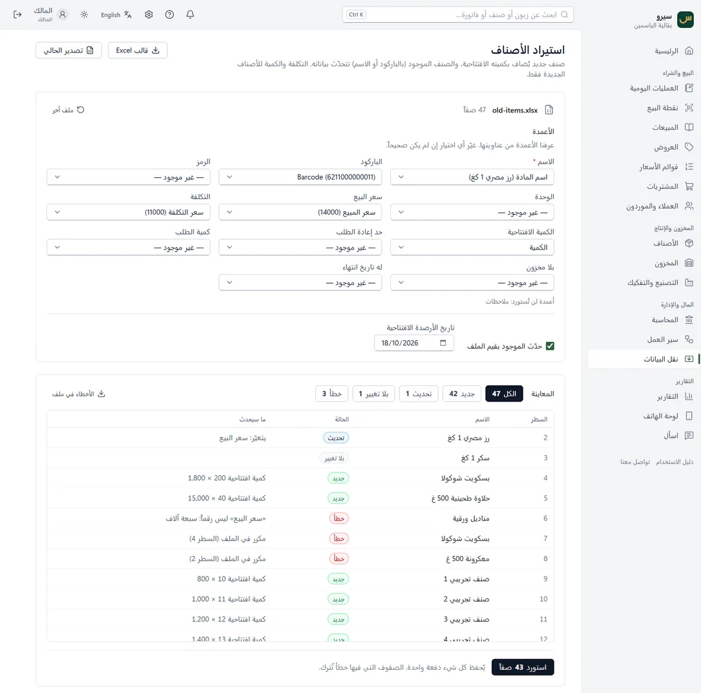

Excel ونقل البيانات
تنتقل من برنامج قديم أو من دفتر؟ أدخل أصنافك وزبائنك وأرصدتك من ملف Excel دفعة واحدة، وترى ما سيحدث لكل سطر قبل الحفظ.
- استيراد الأصناف من Excel
- كل القوائم: نقل البيانات
- قواعد الأرصدة الافتتاحية
- تعديل الأسعار بالجملة
- على الجوال
استيراد الأصناف من Excel
- في الأصناف اضغط استيراد من Excel، ونزّل قالب Excel إن لم يكن عندك ملف.
- اختر ملفك. أي ملف Excel أو CSV يصلح، حتى المصدَّر من برنامجك القديم: البرنامج يتعرّف على الأعمدة من عناوينها، وتغيّر أي عمود لم يُعرف.
- تظهر المعاينة: كل سطر جديد أو تحديث أو خطأ، مع السبب ورقم السطر في ملفك. الأخطاء تُنزَّل في ملف لتصلحها.
- اضغط استورد. يُحفظ كل شيء دفعة واحدة، والأصناف الجديدة تدخل بكمياتها وتكلفتها.

كل القوائم: نقل البيانات
من نقل البيانات تستورد بالطريقة نفسها:
- الأصناف بكمياتها وتكلفتها.
- الزبائن والموردون بأرقامهم وأرصدتهم (اسم بلا نوع يُعتبر زبوناً، ومن شاشة الموردين على الجوال مورداً).
- الأرصدة الافتتاحية: لصنف موجود، أو لزبون ومورد، أو لحساب مثل الصندوق والبنك.
- أسعار الموردين لمقارنة العروض.
قواعد الأرصدة الافتتاحية
- الكميات والأرصدة الافتتاحية تُقيَّد في الحسابات، لذلك يستوردها المالك أو المحاسب فقط.
- تُسجَّل مرة واحدة: استيراد الملف نفسه مرة ثانية يرفض ما له رصيد افتتاحي سابق، فلا يتضاعف شيء.
- صنف عنده مخزون فعلاً؟ تتغيّر كميته بالجرد لا بالاستيراد.
- حسابات الزبائن والموردين والمخزون لا تأخذ رصيداً مباشراً: رصيدها يأتي من أسماء الزبائن والموردين والأصناف نفسها.
تعديل الأسعار بالجملة
- تصدير إلى Excel من قائمة الأصناف.
- عدّل الأسعار في Excel واحفظ الملف.
- استورد الملف نفسه: تظهر الأسعار المتغيّرة تحديث وتبقى الأخرى كما هي.
التكلفة والكمية لا تتغيّران بإعادة الاستيراد: الأولى تحسبها المشتريات والثانية يصحّحها الجرد.
على الجوال
زر Excel في شاشة الأصناف أو الزبائن أو الموردون: نزّل القالب أو صدّر القائمة عبر المشاركة، واختر ملفاً لتستورده بالمعاينة نفسها.